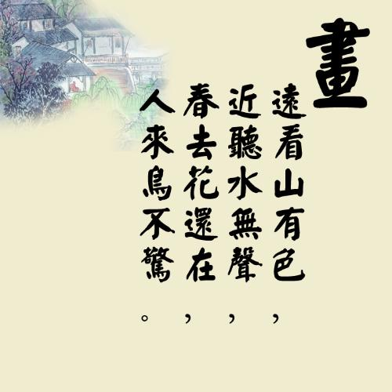
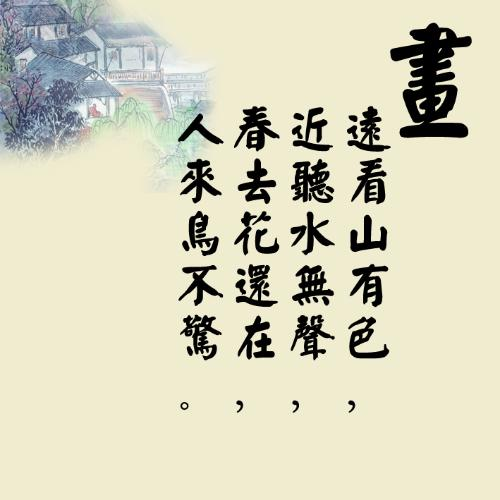

个人资料

- 迷途的板蓝根
- 山东省 济南市
- 1988年 天蝎座
- 爱好：乱七八糟
- 生活：一塌糊涂
- 未来：杳无音信

博文操作日志列表
2016.6.17,为musicControl按钮添加setInterval/clearInterval事件，音乐播放时每隔618ms切换一次可见状态，不播放时不闪烁;
个人资料

博文操作日志列表
2016.6.17,为musicControl按钮添加setInterval/clearInterval事件，音乐播放时每隔618ms切换一次可见状态，不播放时不闪烁;